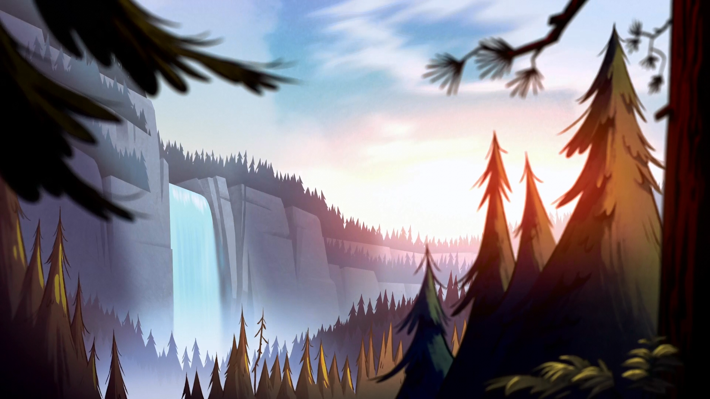
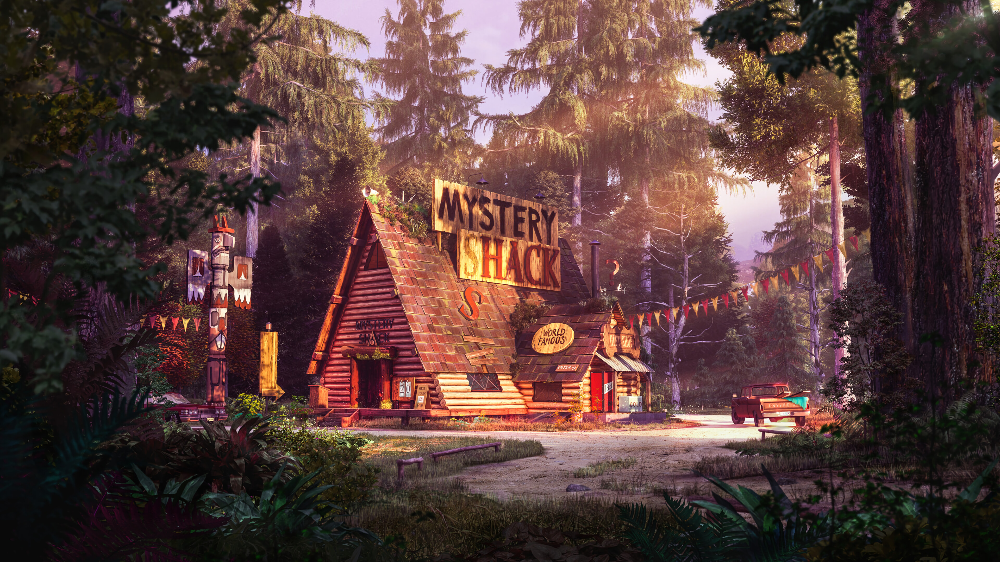
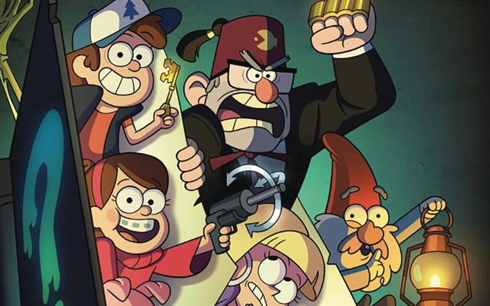
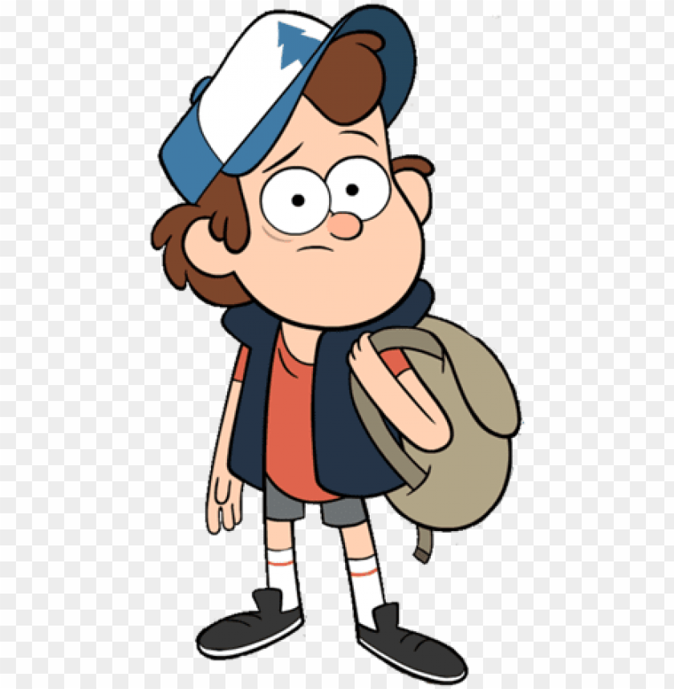
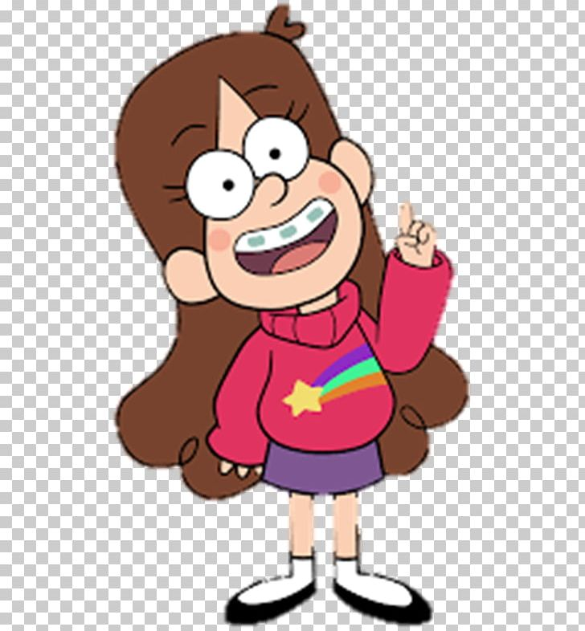
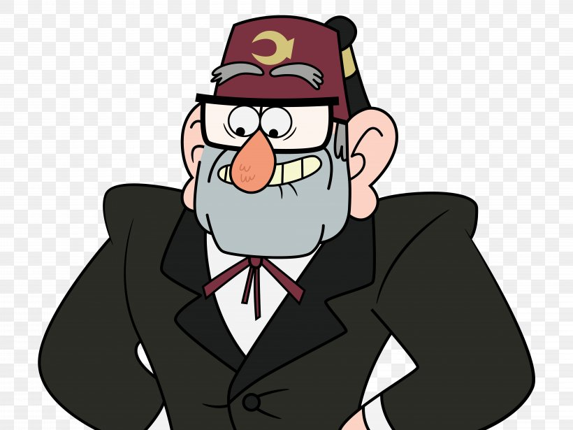
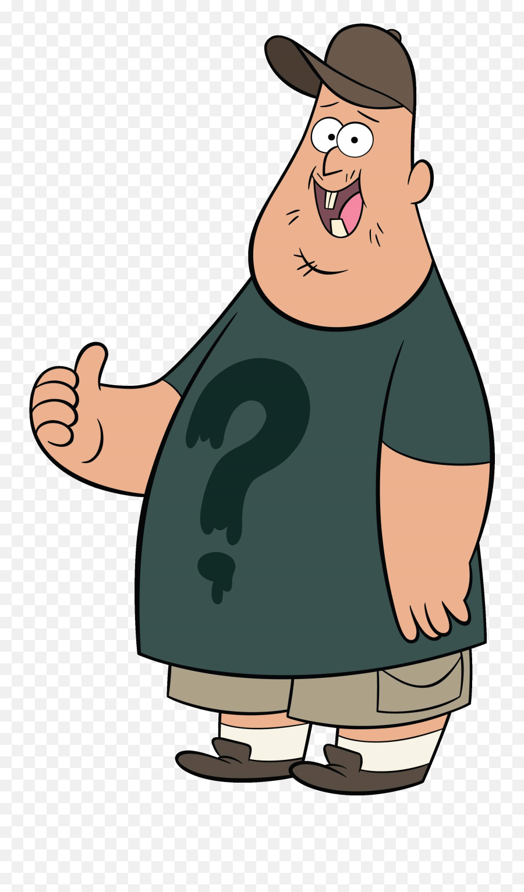
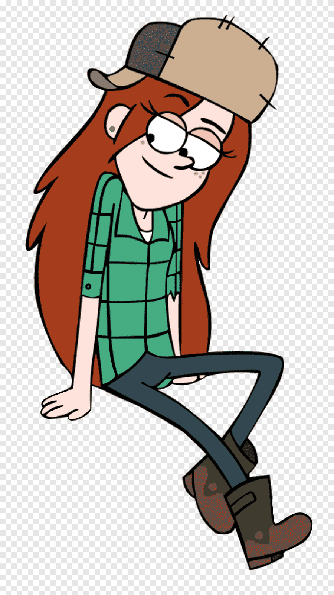
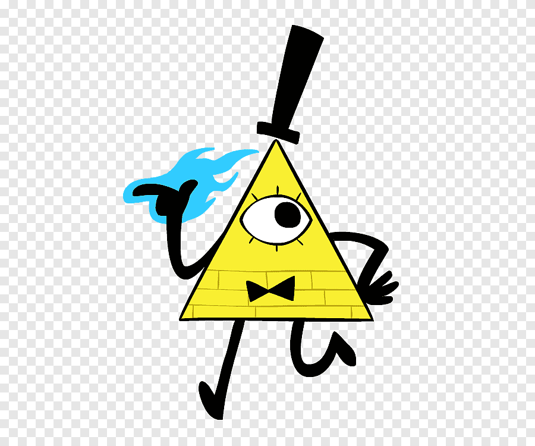
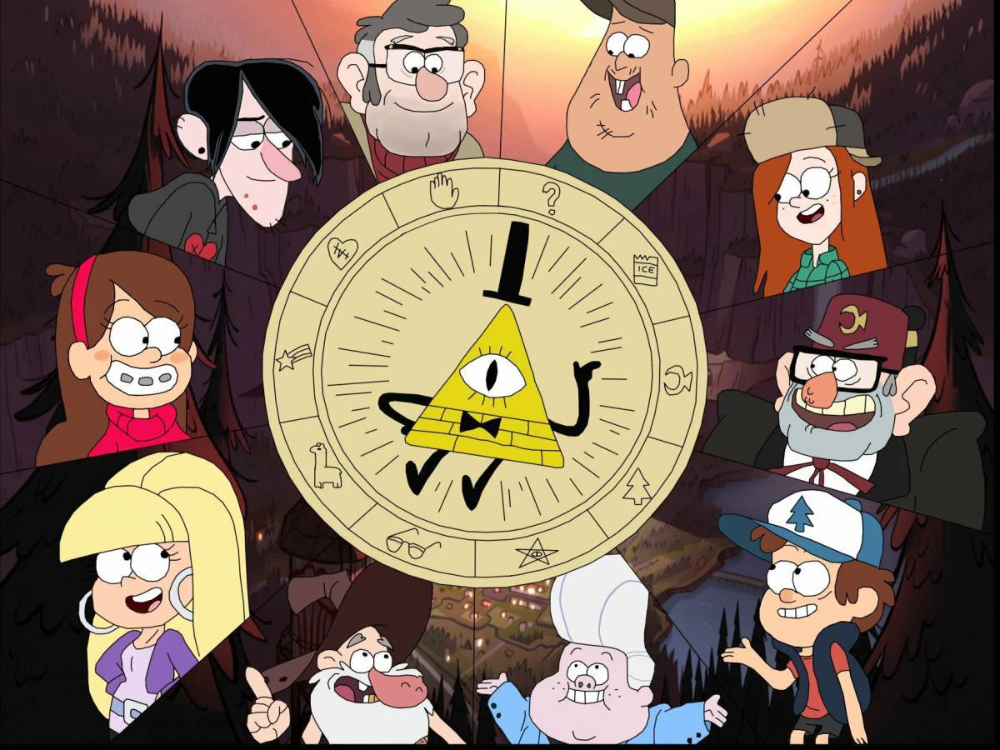

Archivo 01
Bosque de secretos
Los arboles parecen moverse cuando nadie los mira.
Diario de criaturas y secretos
Un pueblo escondido entre pinos, enigmas y luces que aparecen cuando cae la noche.

Los arboles parecen moverse cuando nadie los mira.

Recuerdos extranos, objetos imposibles y visitantes curiosos.

Dipper y Mabel descubren que cada rincón del pueblo guarda una pista.
Habitantes del misterio

Edad: 12 anos.
Personalidad: curioso, responsable y algo nervioso.
Papel: investiga los misterios del pueblo usando el diario.

Edad: 12 anos.
Personalidad: alegre, creativa y muy expresiva.
Papel: acompana las aventuras con humor, valentia y optimismo.

Edad: adulto mayor.
Personalidad: astuto, sarcastico y protector.
Papel: dirige la cabana y oculta mas de un secreto familiar.

Edad: joven adulto.
Personalidad: amable, leal y divertido.
Papel: ayuda en la cabana y siempre esta listo para una aventura.

Edad: adolescente.
Personalidad: tranquila, valiente y directa.
Papel: trabaja en la cabana y conoce bien el bosque.

Edad: entidad antigua.
Personalidad: caotico, manipulador y burlon.
Papel: representa la amenaza sobrenatural mas peligrosa.
Ruta del expediente
Paginas encontradas
El diario registra criaturas, lugares, simbolos y advertencias escritas por alguien que ya habia investigado el pueblo.
Funciona como guia para resolver enigmas, pero tambien demuestra que Gravity Falls es mas peligroso de lo que parece.
La serie usa mensajes ocultos, claves y detalles pequenos para que el espectador tambien participe en el misterio.
Casos del diario
El objeto que inicia la investigacion y revela criaturas, codigos y advertencias sobre el pueblo.
Una trampa para turistas que tambien funciona como refugio, punto de reunion y escondite de secretos.
Una entidad que convierte los enigmas del pueblo en una amenaza mucho mas grande.
Recortes del expediente
